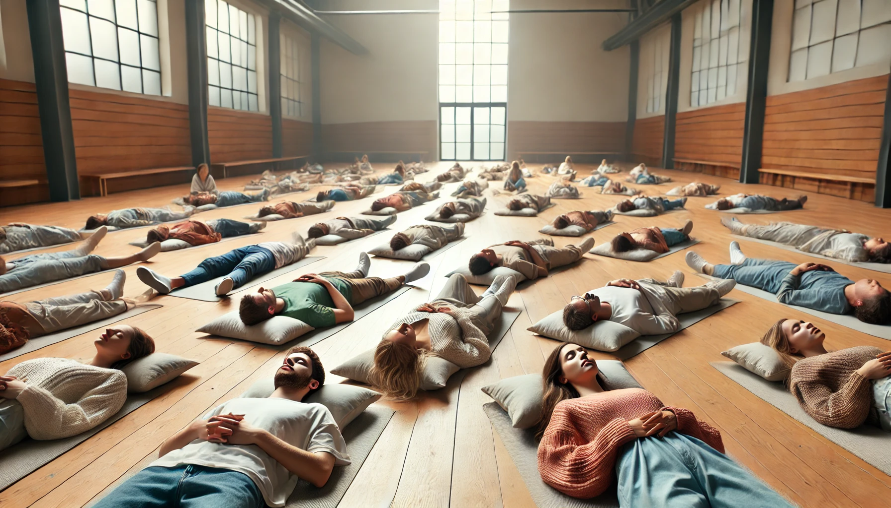

Méditation Mandala
La méditation Mandala est une technique cathartique puissante qui crée un cercle d'énergie pour un centrage naturel. Cette méditation se compose de quatre étapes, chacune durant 15 minutes. Le processus aide le méditant à devenir conscient de la nature circulaire de l'esprit et à briser les boucles continues d'émotions et de pensées.
Pour pratiquer cette méditation : Téléchargez l'audio et écoutez-le tout en suivant les étapes ci-dessous.
1. Première Étape : 15 minutes
Avec les yeux ouverts, courez sur place. Commencez lentement et augmentez progressivement la vitesse. Levez les genoux aussi haut que possible. Respirez profondément et régulièrement pour déplacer l'énergie en vous. Oubliez l'esprit et le corps, et continuez à courir.

2. Deuxième Étape : 15 minutes
Asseyez-vous avec les yeux fermés et la bouche ouverte et détendue. Faites doucement pivoter votre corps à partir de la taille, comme un roseau dans le vent. Sentez-vous bouger de côté à côté, d'avant en arrière. Cela amènera vos énergies éveillées au centre du nombril.

3. Troisième Étape : 15 minutes
Allongez-vous sur le dos avec les yeux ouverts. Gardez la tête immobile et tournez les yeux dans le sens des aiguilles d'une montre. Faites-les pivoter complètement dans leurs orbites comme si vous suiviez la trotteuse d'une immense horloge. Faites-le aussi rapidement que possible tout en gardant la bouche ouverte et la mâchoire détendue. Respirez doucement et régulièrement. Cela amènera vos énergies centrées au troisième œil.

4. Quatrième Étape : 15 minutes
Fermez les yeux et restez immobile. Entrez dans un état de silence et laissez l'expérience s'intégrer.
